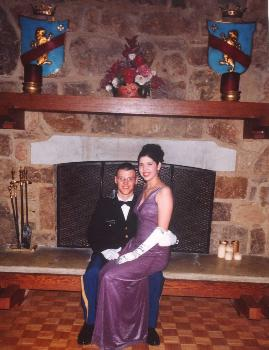

Steven
UPDATE
Many many negatives have been developed. I've scanned and posted about a third of them. You can view them in an organized clickable arrangement; or all at once, unformatted, the whole schmear. Enjoy!
He goes to school at North Georgia.
